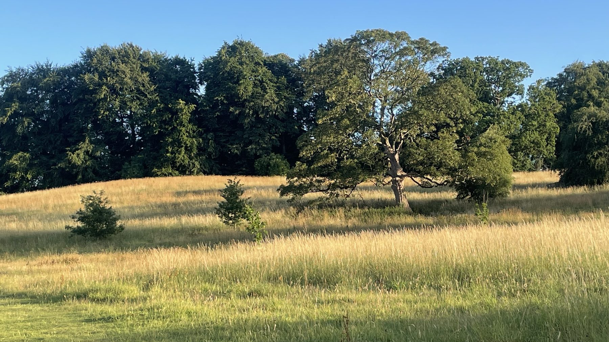
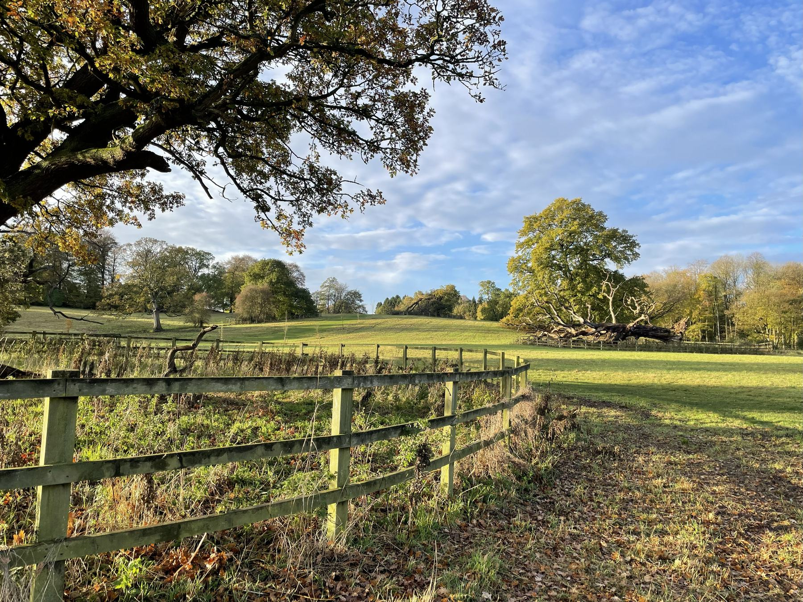
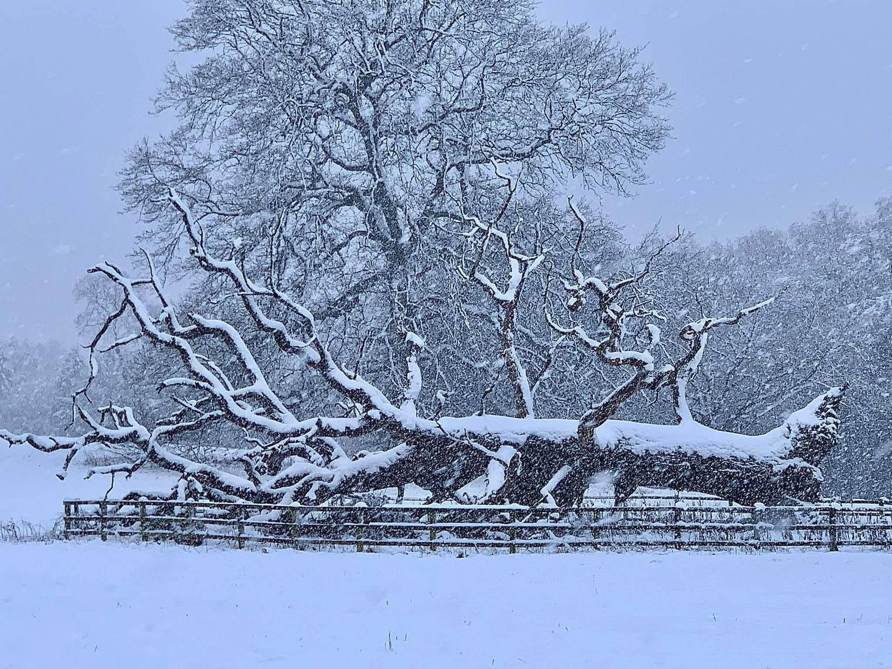

The Friends of Jacob Smith Park are dedicated to the protection, conservation, and enhancement of this historic parkland.
Jacob Smith Park (JSP) is a 30-acre green space in Scriven, close to the centre of Knaresborough. It is a managed wild space with a wide variety of habitats and wildlife to enjoy as you walk around.
It is a tranquil space to spend time with friends or to simply relax on a bench and enjoy the peaceful surroundings. There is also an open space where children can enjoy playing football, flying a kite or just running around.


JSP was generously bequeathed to Harrogate Borough Council by Winifred Jacob Smith MBE, following her death in 2003. It was Miss Jacob Smith's wish that the park should be opened to the community for all generations to enjoy:
"the freedom and beauty that public parks bring"
The Friends of Jacob Smith Park (FoJSP) are a local community group providing the link between the community and the council. We are committed to encouraging all ages to value and enjoy their park whilst sharing it with respect for one another and nature.
We are passionate about enhancing biodiversity and bringing people together to enjoy this special recreational green space, important wildlife habitat and historical landscape.
Whatever the reason for your visit, we hope you enjoy this lovely green space as Miss Jacob Smith wished.
